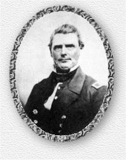

|
|
||||
|
Captain Robert Baker
Pegram, CSA
|
 |
|
Robert Baker Pegram, son of General John
Pegram and Martha Ward Gregory, was born at "Bonneville",
Dinwiddie County, Virginia, 10 December 1811 . He was a noted Naval hero,
whose life accomplishments go beyond the scope of this brief
biography. For those interested in further information, The Virginia
Cavalcade carried an article "Captain Robert Pegram: Hero Under
Four Flags," which details some of his remarkable naval career. It
contains a portrait of him and illustrations of some of the ships that he
commanded. His sword of honor, bestowed upon him by a grateful State of
Virginia, is now in the Confederate Museum in Richmond. Robert Baker
Pegram entered the United States Navy as a midshipman 2 February 1829, and
received regular and uninterrupted promotions. He served in the
Mediterranean, Japan and East India Squadrons, and in the famous Wilkes
Expedition. His most celebrated service was the capture of a piratical
flotilla in the Sea of China. He took sixteen Junks, with one hundred
cannons, inflicting a loss of one hundred men. He received recognition from the British Commander in the expedition, and her Majesty, Queen
Victoria.
Robert Baker resigned from the United States Navy on 17 April 1861, and was made a Captain in the Confederate Navy. He was placed in command of the Norfolk Navy Yard. He disabled the steamer Harriet Lane by his batteries at Pigs Point. He commanded the steamer Nashville, and captured the Harvey Burch in the English Channel. He superintended the armament of the iron-clad Richmond. Funds were raised to purchase what was termed the volunteer navy of the State. He went to England for that purpose and had a vessel ready when Appomattox occurred After the war Captain Pegram was able to join his family and engage in civilian pursuits. He was listed as a Vestryman of Bristol Parish in 1871. He was appointed Superintendent of the Petersburg Railroad. After three years he joined the new Life Insurance Company of Virginia, in 1871. In 1873 he was made General Agent at Norfolk. He was Vestryman at Saint Pauls Church there, when it was restored in 1892. Captain Pegram remained in Norfolk until his death on 24 October 1894. He was buried there in the old part of Elmwood Cemetery, known as Cedar Grove. Robert Baker married Lucy Binns Cargill who was born 31 May 1814 and died 1 June 1870. She was the daughter of the Reverend John Cargill, Rector of St. Andrews Parish, Sussex County, Virginia, and Lucy Binns, daughter of Charles Binns of Sussex Here you can find "Weiland", their family home. Their descendants are covered here in the Pegram family file. The Richmond (Virginia) Dispatch in1861 carried the following article about Robert Baker Pegram: "The London Illustrated News, of the 30th November last, contained a spirited woodcut of the capture and burning of the Harvey Burch by the Confederate Steamer Nashville, and thus speaks of the officers of the latter vessel. Captain Pegram is an old officer of the United States Navy, and bore a conspicuous part in the Mexican War, in the Paraguay and Japan Expeditions, and during the war waged by the English and French in China. For his distinguished services, his native state, Virginia, voted him, by the unanimous voice of the General Assembly of the Legislature, a splendid sword, and Sir John Stilling, in his dispatches to the Admiralty, makes the following mention of him:
The following obituary appeared in the Norfolk Virginian: CAPTAIN R.B. PEGRAM
Source: Samuel W. Simmons: The Pegrams Of Virginia And Their Descendants; Atlanta Georgia, 1984 |
|